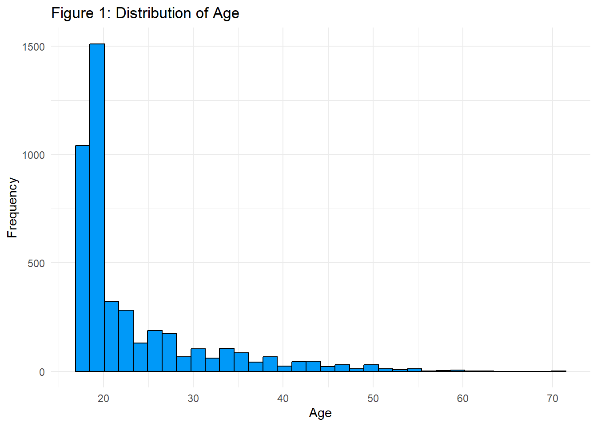
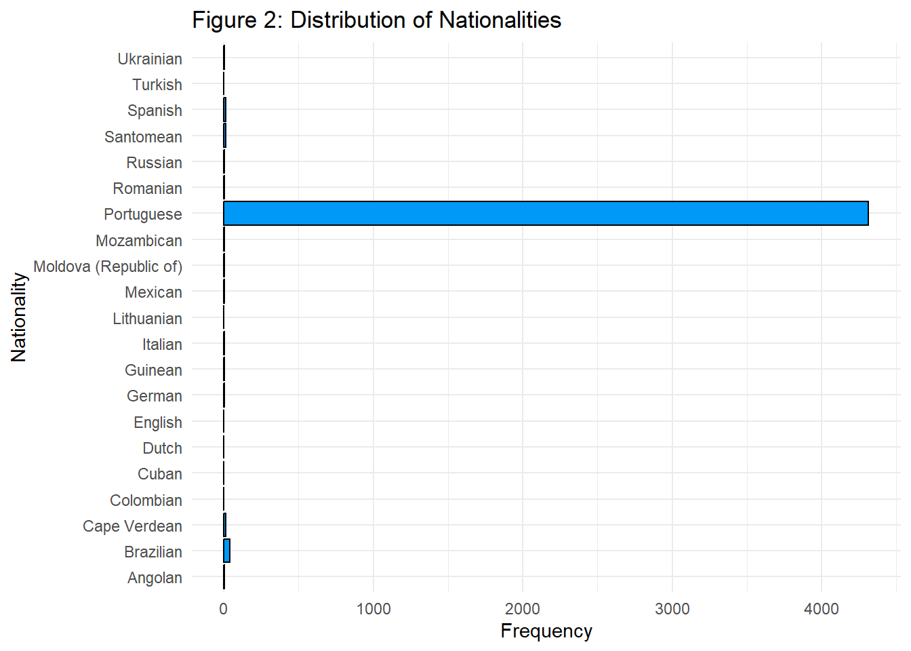
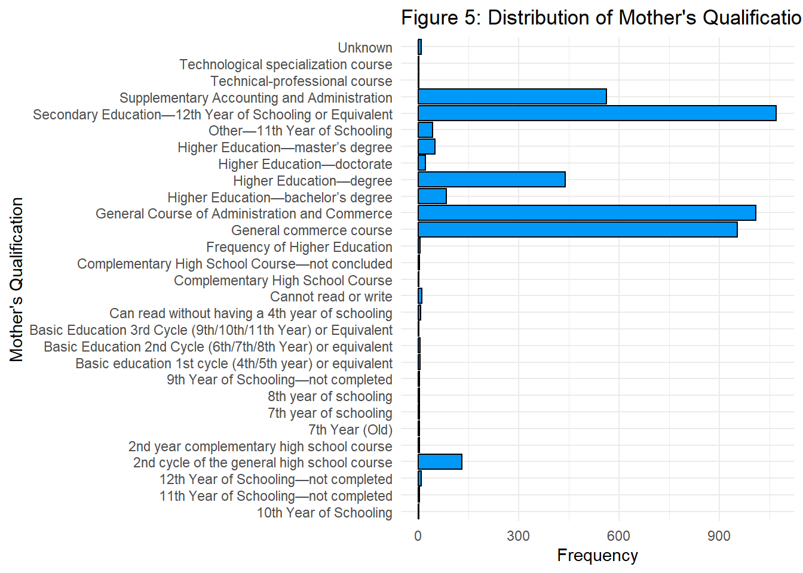
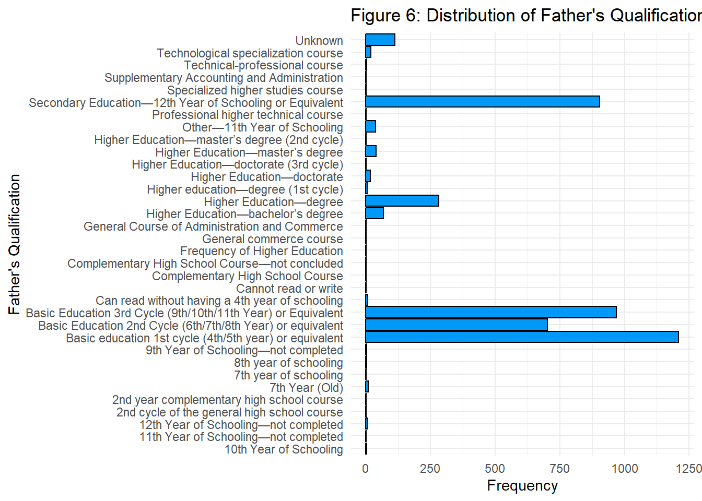
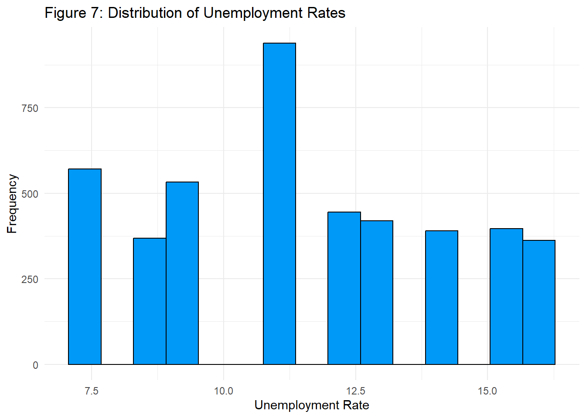
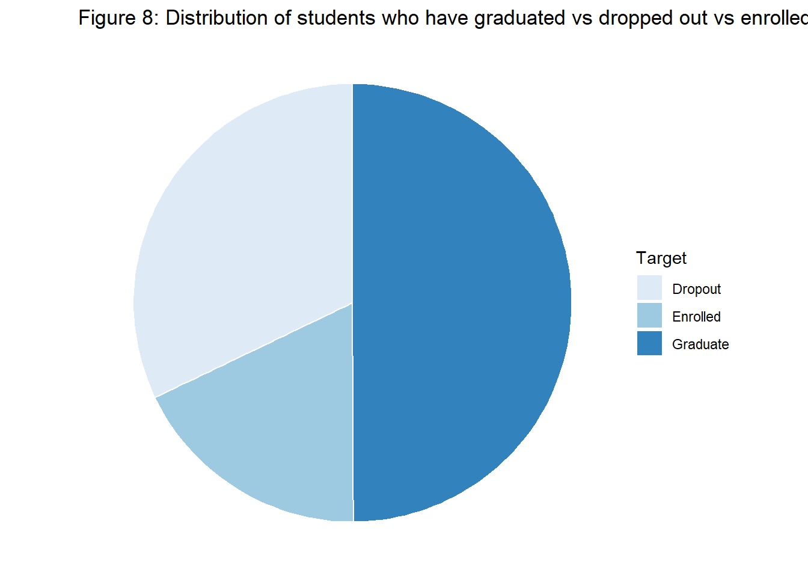
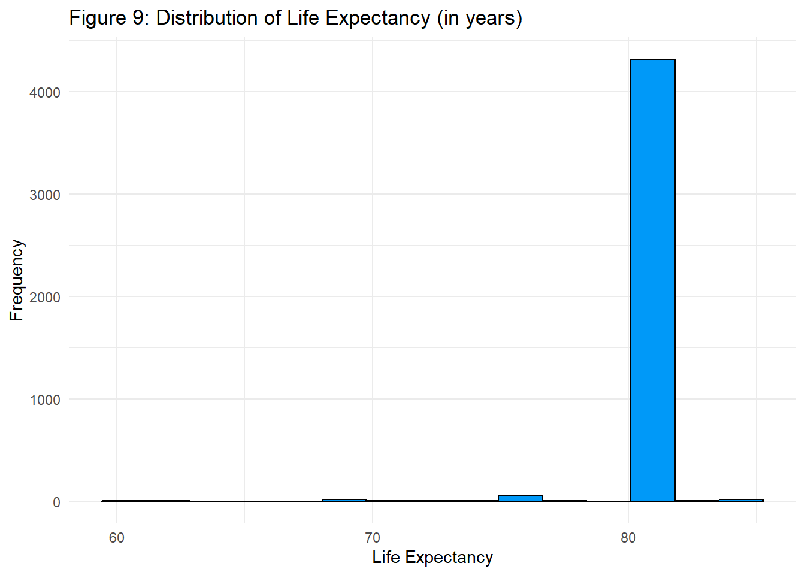
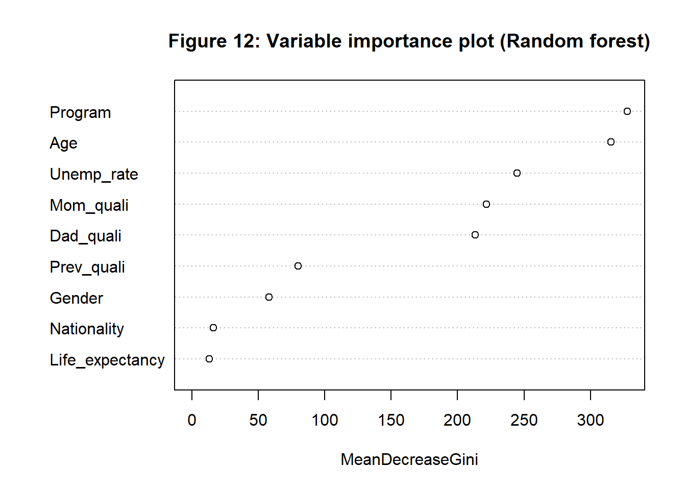
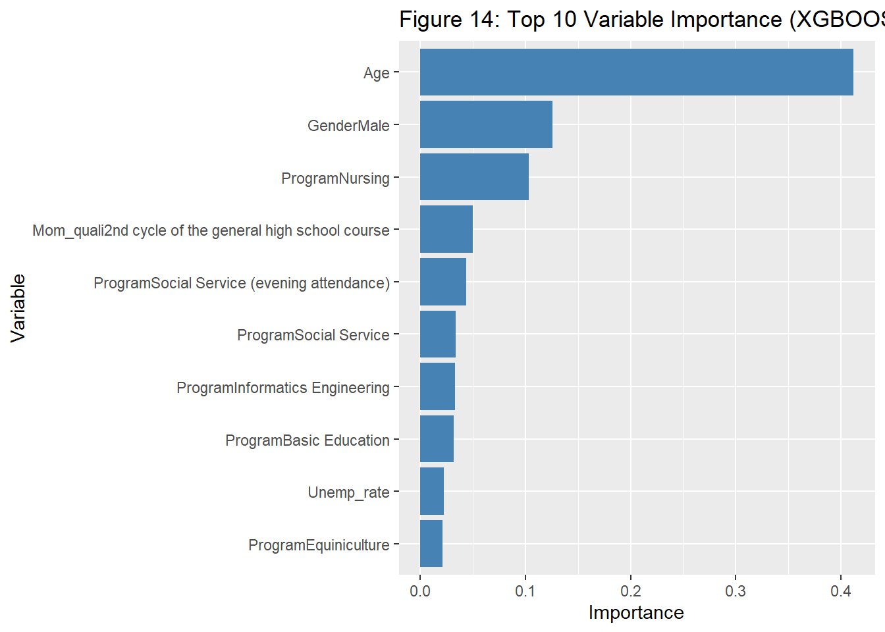

Predicting Student Dropouts
Mahathi Gandhamaneni
March 13th, 2023
Introduction
In recent times, there has been a spotlight on the inequity that students face during university - whether that be during the admissions process, or throughout the rest of their studies once they are in.
In particular, the opportunities that seem to be available to everyone regardless of who they are or where they are from, may just be a mirage. Through taking a look at the news and articles, it appears that not just academics, but demographic, socioeconomic, and macroeconomic factors appear to have an effect on students in university. For example, students coming from certain backgrounds may not have financial, academic, or even emotional support being provided by their families.
Sometimes, these factors may lead to a student dropping out or they may lead to a student graduating with honours. What we want to investigate here is whether we can predict what outcome a student will face based on certain socioeconomic, demographic, and macroeconomic factors. Specifically, the question we want to answer in this project is as follows: Can we predict whether a student will drop out of an undergraduate degree program or not, based on factors such as gender, unemployment rates, nationality, 2019 life expectancy (based on nationality), previous qualification, mother’s and father’s qualification, and program of study?
Methods
Data Collection
The data was primarily acquired from two sources: a Kaggle dataset entitled “Predict students’ dropout and academic success” (https://www.kaggle.com/datasets/thedevastator/higher-education-predictors-of-student-retention?datasetId=2780494&searchQuery=cleaning) which I will henceforth refer to as the “Student Data”, and 2019 life expectancy data extracted using the World Bank Gender Data Portal API (which I will refer to as the “World Bank Data”).
The main data is actually derived from a dataset created by Realinho et al (2022) for their paper entitled Predicting Student Dropout and Academic Success (Realinho et al). This paper is where I was able to find all the background information about the dataset for the purposes of understanding it, and using it to perform data analysis. The dataset was developed at the Polytechnic Institute of Portalegre and was used to build machine learning models to predict academic performance. The data in the dataset was derived from several sources of academic (student), socioeconomic, and macroeconomic data in Portugal (Realinho et al can be consulted for more detail into the sources). It refers to student records enrolled between the academic years of 2008 to 2019. Almost all the categorical variables in the dataset are numerically encoded (the numeric encoding values are found at https://www.mdpi.com/2306-5729/7/11/146). In order to simplify data exploration and analysis, as well as enhance readability, we have decided to replace the numeric encoding with the real values. The main data does not have a reference to the year from which an observation was extracted, so it is very difficult to figure out what year of life expectancy data to associate with which record. In order to simplify the process (even though it may be at the expense of accuracy), 2019 life expectancy figures were used for every observation respective to their nationality.
Within the World Bank API, every country is assigned a three letter ISO code which allows us to concatenate the appropriate URL for each country so that we can extract the life expectancy data for 2019. For any given country, the API link for the average life expectancy in 2019 is as follows: “http://api.worldbank.org/v2/country/[ISO COUNTRY CODE]/indicator/SP.DYN.LE00.IN?date=2019”, where [ISO COUNTRY CODE] is a standardized code system followed worldwide. The main data exhibits that the student demographic within the data was no more than 21 nationalities. Looking at these 21 values, we can find the ISO code for each one of the countries, and iterate through them all, extracting the appropriate figures and storing them in a dataframe. After this process of data extraction, the main data and the world bank data were then merged through a left join on the nationalities, so that each observation in the final dataframe had a 2019 life expectancy value associated with it based on the student’s nationality.
Data Cleaning & Wrangling
Since the main data was already used in analysis and modelling in a prior study, it was already cleaned and prepared well. There were no missing values or any other immediate issues that needed to be addressed before the data could be used. However, there were quite a few columns in the main data that we will not be using in our analysis that needed to be dropped from the data frame.
In fact, of the 35 variables in the main dataset, the only variables selected were:Some of the variables within the main data were also renamed to minimize length and to also increase readability.
Similarly, when it comes to the life expectancy data frame that we extracted, there were columns that were unnecessary and that needed to be dropped. Specifically, we were interested in only two columns - the ISO country code (which served as a unique identifier until an ID column was added) and the actual life expectancy value column. An ID column was added to this dataframe in order to match the nationality encoding in the main dataset to make merging the two easier. After the two dataframes were merged, the ISO country code column was removed, thus leaving only the life expectancy value that we need.
Data Exploration
Now that we have our cleaned and wrangled data, we can begin to explore key variables and associations.
In total, the dataset has 4424 observations and 10 variables. In order to explore the data, we decided to take a look at the distributions of all the variables, frequencies of categorical variables, and summary statistics for numerical variables. Specifically, we explored the variables Course, Previous qualification, Mother’s qualification, and Father’s qualification through bar plots and frequency tables. We explored the numerical variables Age, Unemployment rate, and Life expectancy through histograms and summary statistics tables. As for the variables gender and target, we used frequency tables to examine these since they have comparatively fewer categories as compared to the other variables in the data set and their composition can be understood through looking at the frequency of their values.
Preliminary Results
# undoing numerical encoding
# nationality
df$Nationality[df$Nationality == "1"] <- "Portuguese"
df$Nationality[df$Nationality == "2"] <- "German"
df$Nationality[df$Nationality == "3"] <- "Spanish"
df$Nationality[df$Nationality == "4"] <- "Italian"
df$Nationality[df$Nationality == "5"] <- "Dutch"
df$Nationality[df$Nationality == "6"] <- "English"
df$Nationality[df$Nationality == "7"] <- "Lithuanian"
df$Nationality[df$Nationality == "8"] <- "Angolan"
df$Nationality[df$Nationality == "9"] <- "Cape Verdean"
df$Nationality[df$Nationality == "10"] <- "Guinean"
df$Nationality[df$Nationality == "11"] <- "Mozambican"
df$Nationality[df$Nationality == "12"] <- "Santomean"
df$Nationality[df$Nationality == "13"] <- "Turkish"
df$Nationality[df$Nationality == "14"] <- "Brazilian"
df$Nationality[df$Nationality == "15"] <- "Romanian"
df$Nationality[df$Nationality == "16"] <- "Moldova (Republic of)"
df$Nationality[df$Nationality == "17"] <- "Mexican"
df$Nationality[df$Nationality == "18"] <- "Ukrainian"
df$Nationality[df$Nationality == "19"] <- "Russian"
df$Nationality[df$Nationality == "20"] <- "Cuban"
df$Nationality[df$Nationality == "21"] <- "Colombian"
#course
df$Program[df$Program == "1"] <- "Biofuel Production Technologies"
df$Program[df$Program == "2"] <- "Animation and Multimedia Design"
df$Program[df$Program == "3"] <- "Social Service (evening attendance)"
df$Program[df$Program == "4"] <- "Agronomy"
df$Program[df$Program == "5"] <- "Communication Design"
df$Program[df$Program == "6"] <- "Veterinary Nursing"
df$Program[df$Program == "7"] <- "Informatics Engineering"
df$Program[df$Program == "8"] <- "Equiniculture"
df$Program[df$Program == "9"] <- "Management"
df$Program[df$Program == "10"] <- "Social Service"
df$Program[df$Program == "11"] <- "Tourism"
df$Program[df$Program == "12"] <- "Nursing"
df$Program[df$Program == "13"] <- "Oral Hygiene"
df$Program[df$Program == "14"] <- "Advertising and Marketing Management"
df$Program[df$Program == "15"] <- "Journalism and Communication"
df$Program[df$Program == "16"] <- "Basic Education"
df$Program[df$Program == "17"] <- "Management (evening attendance)"
#prev quali
df$Prev_quali[df$Prev_quali == "1"] <- "Secondary education"
df$Prev_quali[df$Prev_quali == "2"] <- "Higher education—bachelor’s degree"
df$Prev_quali[df$Prev_quali == "3"] <- "Higher education—degree"
df$Prev_quali[df$Prev_quali == "4"] <- "Higher education—master’s degree"
df$Prev_quali[df$Prev_quali == "5"] <- "Higher education—doctorate"
df$Prev_quali[df$Prev_quali == "6"] <- "Frequency of higher education"
df$Prev_quali[df$Prev_quali == "7"] <- "12th year of schooling—not completed"
df$Prev_quali[df$Prev_quali == "8"] <- "11th year of schooling—not completed"
df$Prev_quali[df$Prev_quali == "9"] <- "Other—11th year of schooling"
df$Prev_quali[df$Prev_quali == "10"] <- "10th year of schooling"
df$Prev_quali[df$Prev_quali == "11"] <- "10th year of schooling—not completed"
df$Prev_quali[df$Prev_quali == "12"] <- "Basic education 3rd cycle (9th/10th/11th year) or equivalent"
df$Prev_quali[df$Prev_quali == "13"] <- "Basic education 2nd cycle (6th/7th/8th year) or equivalent"
df$Prev_quali[df$Prev_quali == "14"] <- "Technological specialization course"
df$Prev_quali[df$Prev_quali == "15"] <- "Higher education—degree (1st cycle)"
df$Prev_quali[df$Prev_quali == "16"] <- "Professional higher technical course"
df$Prev_quali[df$Prev_quali == "17"] <- "Higher education—master’s degree (2nd cycle)"
#mothers quali
df$Mom_quali[df$Mom_quali == "1"] <- "Secondary Education—12th Year of Schooling or Equivalent"
df$Mom_quali[df$Mom_quali == "2"] <- "Higher Education—bachelor’s degree"
df$Mom_quali[df$Mom_quali == "3"] <- "Higher Education—degree"
df$Mom_quali[df$Mom_quali == "4"] <- "Higher Education—master’s degree"
df$Mom_quali[df$Mom_quali == "5"] <- "Higher Education—doctorate"
df$Mom_quali[df$Mom_quali == "6"] <- "Frequency of Higher Education"
df$Mom_quali[df$Mom_quali == "7"] <- "12th Year of Schooling—not completed"
df$Mom_quali[df$Mom_quali == "8"] <- "11th Year of Schooling—not completed"
df$Mom_quali[df$Mom_quali == "9"] <- "7th Year (Old)"
df$Mom_quali[df$Mom_quali == "10"] <- "Other—11th Year of Schooling"
df$Mom_quali[df$Mom_quali == "11"] <- "2nd year complementary high school course"
df$Mom_quali[df$Mom_quali == "12"] <- "10th Year of Schooling"
df$Mom_quali[df$Mom_quali == "13"] <- "General commerce course"
df$Mom_quali[df$Mom_quali == "14"] <- "Basic Education 3rd Cycle (9th/10th/11th Year) or Equivalent"
df$Mom_quali[df$Mom_quali == "15"] <- "Complementary High School Course"
df$Mom_quali[df$Mom_quali == "16"] <- "Technical-professional course"
df$Mom_quali[df$Mom_quali == "17"] <- "Complementary High School Course—not concluded"
df$Mom_quali[df$Mom_quali == "18"] <- "7th year of schooling"
df$Mom_quali[df$Mom_quali == "19"] <- "2nd cycle of the general high school course"
df$Mom_quali[df$Mom_quali == "20"] <- "9th Year of Schooling—not completed"
df$Mom_quali[df$Mom_quali == "21"] <- "8th year of schooling"
df$Mom_quali[df$Mom_quali == "22"] <- "General Course of Administration and Commerce"
df$Mom_quali[df$Mom_quali == "23"] <- "Supplementary Accounting and Administration"
df$Mom_quali[df$Mom_quali == "24"] <- "Unknown"
df$Mom_quali[df$Mom_quali == "25"] <- "Cannot read or write"
df$Mom_quali[df$Mom_quali == "26"] <- "Can read without having a 4th year of schooling"
df$Mom_quali[df$Mom_quali == "27"] <- "Basic education 1st cycle (4th/5th year) or equivalent"
df$Mom_quali[df$Mom_quali == "28"] <- "Basic Education 2nd Cycle (6th/7th/8th Year) or equivalent"
df$Mom_quali[df$Mom_quali == "29"] <- "Technological specialization course"
df$Mom_quali[df$Mom_quali == "30"] <- "Higher education—degree (1st cycle)"
df$Mom_quali[df$Mom_quali == "31"] <- "Specialized higher studies course"
df$Mom_quali[df$Mom_quali == "32"] <- "Professional higher technical course"
df$Mom_quali[df$Mom_quali == "33"] <- "Higher Education—master’s degree (2nd cycle)"
df$Mom_quali[df$Mom_quali == "34"] <- "Higher Education—doctorate (3rd cycle)"
#fathers quali
df$Dad_quali[df$Dad_quali == "1"] <- "Secondary Education—12th Year of Schooling or Equivalent"
df$Dad_quali[df$Dad_quali == "2"] <- "Higher Education—bachelor’s degree"
df$Dad_quali[df$Dad_quali == "3"] <- "Higher Education—degree"
df$Dad_quali[df$Dad_quali == "4"] <- "Higher Education—master’s degree"
df$Dad_quali[df$Dad_quali == "5"] <- "Higher Education—doctorate"
df$Dad_quali[df$Dad_quali == "6"] <- "Frequency of Higher Education"
df$Dad_quali[df$Dad_quali == "7"] <- "12th Year of Schooling—not completed"
df$Dad_quali[df$Dad_quali == "8"] <- "11th Year of Schooling—not completed"
df$Dad_quali[df$Dad_quali == "9"] <- "7th Year (Old)"
df$Dad_quali[df$Dad_quali == "10"] <- "Other—11th Year of Schooling"
df$Dad_quali[df$Dad_quali == "11"] <- "2nd year complementary high school course"
df$Dad_quali[df$Dad_quali == "12"] <- "10th Year of Schooling"
df$Dad_quali[df$Dad_quali == "13"] <- "General commerce course"
df$Dad_quali[df$Dad_quali == "14"] <- "Basic Education 3rd Cycle (9th/10th/11th Year) or Equivalent"
df$Dad_quali[df$Dad_quali == "15"] <- "Complementary High School Course"
df$Dad_quali[df$Dad_quali == "16"] <- "Technical-professional course"
df$Dad_quali[df$Dad_quali == "17"] <- "Complementary High School Course—not concluded"
df$Dad_quali[df$Dad_quali == "18"] <- "7th year of schooling"
df$Dad_quali[df$Dad_quali == "19"] <- "2nd cycle of the general high school course"
df$Dad_quali[df$Dad_quali == "20"] <- "9th Year of Schooling—not completed"
df$Dad_quali[df$Dad_quali == "21"] <- "8th year of schooling"
df$Dad_quali[df$Dad_quali == "22"] <- "General Course of Administration and Commerce"
df$Dad_quali[df$Dad_quali == "23"] <- "Supplementary Accounting and Administration"
df$Dad_quali[df$Dad_quali == "24"] <- "Unknown"
df$Dad_quali[df$Dad_quali == "25"] <- "Cannot read or write"
df$Dad_quali[df$Dad_quali == "26"] <- "Can read without having a 4th year of schooling"
df$Dad_quali[df$Dad_quali == "27"] <- "Basic education 1st cycle (4th/5th year) or equivalent"
df$Dad_quali[df$Dad_quali == "28"] <- "Basic Education 2nd Cycle (6th/7th/8th Year) or equivalent"
df$Dad_quali[df$Dad_quali == "29"] <- "Technological specialization course"
df$Dad_quali[df$Dad_quali == "30"] <- "Higher education—degree (1st cycle)"
df$Dad_quali[df$Dad_quali == "31"] <- "Specialized higher studies course"
df$Dad_quali[df$Dad_quali == "32"] <- "Professional higher technical course"
df$Dad_quali[df$Dad_quali == "33"] <- "Higher Education—master’s degree (2nd cycle)"
df$Dad_quali[df$Dad_quali == "34"] <- "Higher Education—doctorate (3rd cycle)"
#gender
df$Gender[df$Gender == "0"] <- "Female"
df$Gender[df$Gender == "1"] <- "Male"
df$Nationality <- as.factor(df$Nationality)
df$Program <- as.factor(df$Program)
df$Prev_quali <- as.factor(df$Prev_quali)
df$Mom_quali <- as.factor(df$Mom_quali)
df$Dad_quali <- as.factor(df$Dad_quali)
df$Gender <- as.factor(df$Gender)
apply(df, 2, unique)## $Nationality
## [1] "Portuguese" "German" "Spanish"
## [4] "Italian" "Dutch" "English"
## [7] "Lithuanian" "Angolan" "Cape Verdean"
## [10] "Guinean" "Mozambican" "Santomean"
## [13] "Turkish" "Brazilian" "Romanian"
## [16] "Moldova (Republic of)" "Mexican" "Ukrainian"
## [19] "Russian" "Cuban" "Colombian"
##
## $Program
## [1] "Animation and Multimedia Design"
## [2] "Tourism"
## [3] "Communication Design"
## [4] "Journalism and Communication"
## [5] "Social Service (evening attendance)"
## [6] "Management (evening attendance)"
## [7] "Nursing"
## [8] "Equiniculture"
## [9] "Social Service"
## [10] "Advertising and Marketing Management"
## [11] "Basic Education"
## [12] "Veterinary Nursing"
## [13] "Oral Hygiene"
## [14] "Management"
## [15] "Agronomy"
## [16] "Biofuel Production Technologies"
## [17] "Informatics Engineering"
##
## $Prev_quali
## [1] "Secondary education"
## [2] "Basic education 3rd cycle (9th/10th/11th year) or equivalent"
## [3] "Professional higher technical course"
## [4] "Technological specialization course"
## [5] "11th year of schooling—not completed"
## [6] "Higher education—degree"
## [7] "Higher education—degree (1st cycle)"
## [8] "Higher education—bachelor’s degree"
## [9] "Higher education—master’s degree"
## [10] "Other—11th year of schooling"
## [11] "Higher education—master’s degree (2nd cycle)"
## [12] "10th year of schooling—not completed"
## [13] "Frequency of higher education"
## [14] "12th year of schooling—not completed"
## [15] "Basic education 2nd cycle (6th/7th/8th year) or equivalent"
## [16] "Higher education—doctorate"
## [17] "10th year of schooling"
##
## $Mom_quali
## [1] "General commerce course"
## [2] "Secondary Education—12th Year of Schooling or Equivalent"
## [3] "General Course of Administration and Commerce"
## [4] "Supplementary Accounting and Administration"
## [5] "Higher Education—degree"
## [6] "Higher Education—master’s degree"
## [7] "Basic education 1st cycle (4th/5th year) or equivalent"
## [8] "Higher Education—bachelor’s degree"
## [9] "2nd cycle of the general high school course"
## [10] "Other—11th Year of Schooling"
## [11] "Cannot read or write"
## [12] "12th Year of Schooling—not completed"
## [13] "Higher Education—doctorate"
## [14] "Unknown"
## [15] "7th Year (Old)"
## [16] "Can read without having a 4th year of schooling"
## [17] "7th year of schooling"
## [18] "2nd year complementary high school course"
## [19] "9th Year of Schooling—not completed"
## [20] "8th year of schooling"
## [21] "Frequency of Higher Education"
## [22] "11th Year of Schooling—not completed"
## [23] "Complementary High School Course—not concluded"
## [24] "Basic Education 2nd Cycle (6th/7th/8th Year) or equivalent"
## [25] "10th Year of Schooling"
## [26] "Basic Education 3rd Cycle (9th/10th/11th Year) or Equivalent"
## [27] "Technical-professional course"
## [28] "Complementary High School Course"
## [29] "Technological specialization course"
##
## $Dad_quali
## [1] "Other—11th Year of Schooling"
## [2] "Higher Education—degree"
## [3] "Basic education 1st cycle (4th/5th year) or equivalent"
## [4] "Basic Education 2nd Cycle (6th/7th/8th Year) or equivalent"
## [5] "Basic Education 3rd Cycle (9th/10th/11th Year) or Equivalent"
## [6] "Secondary Education—12th Year of Schooling or Equivalent"
## [7] "Higher Education—doctorate"
## [8] "Unknown"
## [9] "Higher Education—bachelor’s degree"
## [10] "Higher Education—master’s degree"
## [11] "Technological specialization course"
## [12] "7th Year (Old)"
## [13] "12th Year of Schooling—not completed"
## [14] "Can read without having a 4th year of schooling"
## [15] "7th year of schooling"
## [16] "Higher education—degree (1st cycle)"
## [17] "10th Year of Schooling"
## [18] "Complementary High School Course"
## [19] "Cannot read or write"
## [20] "Professional higher technical course"
## [21] "Specialized higher studies course"
## [22] "Technical-professional course"
## [23] "2nd year complementary high school course"
## [24] "9th Year of Schooling—not completed"
## [25] "Higher Education—master’s degree (2nd cycle)"
## [26] "General commerce course"
## [27] "11th Year of Schooling—not completed"
## [28] "Frequency of Higher Education"
## [29] "8th year of schooling"
## [30] "Complementary High School Course—not concluded"
## [31] "Higher Education—doctorate (3rd cycle)"
## [32] "2nd cycle of the general high school course"
## [33] "Supplementary Accounting and Administration"
## [34] "General Course of Administration and Commerce"
##
## $Gender
## [1] "Male" "Female"
##
## $Age
## [1] "20" "19" "45" "50" "18" "22" "21" "34" "37" "43" "55" "39" "29" "24" "27"
## [16] "23" "26" "33" "35" "25" "44" "36" "47" "28" "38" "30" "31" "32" "40" "42"
## [31] "48" "49" "46" "41" "70" "60" "53" "51" "52" "54" "61" "58" "57" "17" "59"
## [46] "62"
##
## $Unemp_rate
## [1] "10.8" "13.9" " 9.4" "16.2" "15.5" " 8.9" "12.7" "11.1" " 7.6" "12.4"
##
## $Target
## [1] "Dropout" "Graduate" "Enrolled"
##
## $Life_expectancy
## [1] "81.67561" "81.29268" "83.83171" "83.49756" "82.11220" "81.20488"
## [7] "76.28293" "62.44800" "76.00400" "59.72000" "61.16600" "68.52300"
## [13] "77.83200" "75.33800" "75.60732" "70.93500" "74.20200" "71.82732"
## [19] "73.08390" "77.61100" "76.75200"Age
| Variable | N | Mean | Median | Min | 25% | 75% | Max |
|---|---|---|---|---|---|---|---|
| Age | 4424 | 23 | 20 | 17 | 19 | 25 | 70 |
The range of ages in the data lies between 17 and 70. Taking a look at the summary statistics and distribution of values, we see that this variable is heavily right skewed. It appears that 50% of the observations lie between 17-20 years old, with the highest frequency being at 18 years old. This is nothing unusual, since most students enroll in undergraduate degrees between these ages. The oldest observation belonging to a 70 year old is not unusual either since many adults choose to attend universities later on in their lives.
Nationality
| Nationality Number | Frequency |
|---|---|
| Angolan | 2 |
| Brazilian | 38 |
| Cape Verdean | 13 |
| Colombian | 1 |
| Cuban | 1 |
| Dutch | 1 |
| English | 1 |
| German | 2 |
| Guinean | 5 |
| Italian | 3 |
| Lithuanian | 1 |
| Mexican | 2 |
| Moldova (Republic of) | 3 |
| Mozambican | 2 |
| Portuguese | 4314 |
| Romanian | 2 |
| Russian | 2 |
| Santomean | 14 |
| Spanish | 13 |
| Turkish | 1 |
| Ukrainian | 3 |

There are a total of 21 nationalities amongst all observations in the data. Looking at the distribution of nationalities in the data, we see that almost all the observations belong to students of Portuguese descent. Since this data was collected from Portuguese institutions, this is expected. There may be other reasons for such a low concentration of observations with other nationalities such as incomplete observations, etc. It is also important to take into account that this may perhaps lead to non-generalizability of results.
Course/Program
| Program Number | Frequency |
|---|---|
| Advertising and Marketing Management | 268 |
| Agronomy | 210 |
| Animation and Multimedia Design | 215 |
| Basic Education | 192 |
| Biofuel Production Technologies | 12 |
| Communication Design | 226 |
| Equiniculture | 141 |
| Informatics Engineering | 170 |
| Journalism and Communication | 331 |
| Management | 380 |
| Management (evening attendance) | 268 |
| Nursing | 766 |
| Oral Hygiene | 86 |
| Social Service | 355 |
| Social Service (evening attendance) | 215 |
| Tourism | 252 |
| Veterinary Nursing | 337 |

There are a total of 17 programs of study amongst all observations. The observations seem to be mostly evenly distributed among all programs, except Biofuel Production Technologies has the least number of observations (only 12) and Nursing has the most number of observations (766). A detailed interactive distribution with the number of observations per program can be found on the homepage of the final project website (Figure 2).
Previous Qualification
| Previous Qualification Number | Frequency |
|---|---|
| 10th year of schooling | 1 |
| 10th year of schooling—not completed | 2 |
| 11th year of schooling—not completed | 4 |
| 12th year of schooling—not completed | 11 |
| Basic education 2nd cycle (6th/7th/8th year) or equivalent | 7 |
| Basic education 3rd cycle (9th/10th/11th year) or equivalent | 162 |
| Frequency of higher education | 16 |
| Higher education—bachelor’s degree | 23 |
| Higher education—degree | 126 |
| Higher education—degree (1st cycle) | 40 |
| Higher education—doctorate | 1 |
| Higher education—master’s degree | 8 |
| Higher education—master’s degree (2nd cycle) | 6 |
| Other—11th year of schooling | 45 |
| Professional higher technical course | 36 |
| Secondary education | 3717 |
| Technological specialization course | 219 |

There are 17 categories of previous qualifications listed in the dataset. The most frequent observation is Secondary Education. This is also expected since a large majority of students come to universities to pursue undergraduate degrees after completing high school/12th grade. Compared to Secondary Education, the observations in the rest of the categories are minimal.
Mother’s Qualification
| Mother’s Qualification Number | Frequency |
|---|---|
| 10th Year of Schooling | 1 |
| 11th Year of Schooling—not completed | 3 |
| 12th Year of Schooling—not completed | 8 |
| 2nd cycle of the general high school course | 130 |
| 2nd year complementary high school course | 2 |
| 7th Year (Old) | 3 |
| 7th year of schooling | 3 |
| 8th year of schooling | 3 |
| 9th Year of Schooling—not completed | 3 |
| Basic education 1st cycle (4th/5th year) or equivalent | 4 |
| Basic Education 2nd Cycle (6th/7th/8th Year) or equivalent | 4 |
| Basic Education 3rd Cycle (9th/10th/11th Year) or Equivalent | 1 |
| Can read without having a 4th year of schooling | 6 |
| Cannot read or write | 9 |
| Complementary High School Course | 1 |
| Complementary High School Course—not concluded | 3 |
| Frequency of Higher Education | 4 |
| General commerce course | 953 |
| General Course of Administration and Commerce | 1009 |
| Higher Education—bachelor’s degree | 83 |
| Higher Education—degree | 438 |
| Higher Education—doctorate | 21 |
| Higher Education—master’s degree | 49 |
| Other—11th Year of Schooling | 42 |
| Secondary Education—12th Year of Schooling or Equivalent | 1069 |
| Supplementary Accounting and Administration | 562 |
| Technical-professional course | 1 |
| Technological specialization course | 1 |
| Unknown | 8 |

For this variable, there are 34 defined categories in the documentation, but only 29 categories were found among all observations. Since all of the categories in this variable are numbered from 1-29, this doesn’t indicate an error in the data. It may perhaps just be because both mother’s and father’s qualification values were defined in one table since both these variables have the first 29 values in common and the last five are additional in the latter variable. There appear to be three categories that these observations are primarily distributed into. Ordered from highest frequency to lowest, these are Secondary Education—12th Year of Schooling or Equivalent, General Course of Administration and Commerce, and General commerce course. It appears that a large number of students in this dataset have mothers who took some form of commerce course. This may indicate a trend or may have some correlation with admission or dropout rates that may need to be further explored.
Father’s Qualification
| Father’s Qualification Number | Frequency |
|---|---|
| 10th Year of Schooling | 4 |
| 11th Year of Schooling—not completed | 2 |
| 12th Year of Schooling—not completed | 5 |
| 2nd cycle of the general high school course | 1 |
| 2nd year complementary high school course | 1 |
| 7th Year (Old) | 10 |
| 7th year of schooling | 2 |
| 8th year of schooling | 4 |
| 9th Year of Schooling—not completed | 3 |
| Basic education 1st cycle (4th/5th year) or equivalent | 1209 |
| Basic Education 2nd Cycle (6th/7th/8th Year) or equivalent | 702 |
| Basic Education 3rd Cycle (9th/10th/11th Year) or Equivalent | 968 |
| Can read without having a 4th year of schooling | 8 |
| Cannot read or write | 2 |
| Complementary High School Course | 1 |
| Complementary High School Course—not concluded | 1 |
| Frequency of Higher Education | 2 |
| General commerce course | 1 |
| General Course of Administration and Commerce | 1 |
| Higher Education—bachelor’s degree | 68 |
| Higher Education—degree | 282 |
| Higher education—degree (1st cycle) | 5 |
| Higher Education—doctorate | 18 |
| Higher Education—doctorate (3rd cycle) | 1 |
| Higher Education—master’s degree | 39 |
| Higher Education—master’s degree (2nd cycle) | 2 |
| Other—11th Year of Schooling | 38 |
| Professional higher technical course | 1 |
| Secondary Education—12th Year of Schooling or Equivalent | 904 |
| Specialized higher studies course | 2 |
| Supplementary Accounting and Administration | 1 |
| Technical-professional course | 4 |
| Technological specialization course | 20 |
| Unknown | 112 |

For this variable, there are 34 defined categories in the documentation, and all of them were found in the dataset. Similar to the mother’s qualification variable, the observations in the dataset seem to be primarily distributed into three categories - Basic education 1st cycle (4th/5th year) or equivalent, Basic Education 3rd Cycle (9th/10th/11th Year) or Equivalent, Secondary Education—12th Year of Schooling or Equivalent. This may indicate that a large number of students may be first generation university students.
For both the Mother’s Qualification and Father’s Qualification variables, there is a certain category called “Unknown” in which a small fraction of observations lie (approximately 120 observations). This is a very small number of observations as compared to the total number of observations in the dataset and can be removed. However, this variable may indicate other information, such as the student not knowing/having ever met this parent and thus not knowing their qualifications. Due to this, we chose to leave all observations with this value in the dataset.
Gender
| Gender | Frequency |
|---|---|
| Female | 2868 |
| Male | 1556 |
Looking at the frequency table, we see that there is a greater number of observations that belong to students who are female as opposed to those that are male. In fact, there are almost twice the number of females as opposed to males in this dataset. A similar trend is further noticed in the interactive visualization Figure 1 on the homepage of the website. We see that between the ages of 17-20, the number of female students is far greater than the number of male students. This may be perhaps due to a lack of complete data collected from male students, or some other errors at the time of collection. This may skew results in an undesirable manner; the full effect of this needs to be investigated further.
Unemployment Rate
| Variable | N | Mean | Median | Min | 25% | 75% | Max |
|---|---|---|---|---|---|---|---|
| Unemp_rate | 4424 | 12 | 11 | 7.6 | 9.4 | 14 | 16 |
The summary statistics and histogram tell us that the unemployment rates vary from 7.6% to 16.2% over the years, which is in accordance with secondary sources of historical data which looked at rates between 2008 and 2019. There seems to be a high concentration of values around the 11% mark, which may indicate that a large number of observations may have been from a particular year/time where the unemployment rate hovered around this mark. This may potentially skew results.
Target

The Target variable consists of three categories - “Dropped”, “Enrolled”, and Graduate”. Taking a look at this pie chart, we see that around half the students in this dataset graduated from university, one third of the students dropped out, and one sixth are still enrolled in university at the time of data collection (these are perhaps students who enrolled university in the later years of data collection (ex: 2018, 2019).
Life Expectancy
| Variable | N | Mean | Median | Min | 25% | 75% | Max |
|---|---|---|---|---|---|---|---|
| Life_expectancy | 4424 | 81 | 82 | 60 | 82 | 82 | 84 |
Finally, taking a look at the summary statistics and distribution of the life expectancy variable, we see that almost all the observations are at around the 81 (years) mark. This follows from the fact that a majority of observations are from students of Portuguese nationality - since we assigned these values based on nationality, it was bound that the distribution would be skewed as such. Due to this, it is unclear how useful this variable will be in prediction.
Initial Logistic Regression Model
Fitting an initial naive logistic regression model in order to explore the formulated question further, we noticed that some variables seem to be having significant effects on the response variable whereas others seem to not have a significant effect at all. The RMSE value calculated is also very low, implying that the model is not very capable of prediction in its current form. In order to decipher which factors have the most impact on dropout rates and will help us build a model that is capable of accurate predictions, we can use stepwise logistic regression.
Another approach could be the use of other machine learning models. We can fit other models (such as xgboost, random forests, etc.) that help to better describe the data and make more accurate predictions. This approach must be explored further in this project.
Description of Modeling
Building upon our preliminary findings, we decided to make use of three machine learning models in order to best answer our question. These models are Gradient Boosting, Random Forest, and XGBOOST, which we evaluated on accuracy, MSE, and misclassification error. These models were chosen as they are popular machine learning models that are especially used for classification tasks. Before these models were trained, the data was split up into training and testing data, where 80% of the data was devoted to training the model, and 20% of the data was devoted to testing.
After tuning the hyperparameters, the gradient boosting model that gave us the best results was constructed with 10-fold cross validation, 5000 trees, shrinkage rate of 0.001, and interaction depth of 2. The optimal random forest model was selected with a complexity parameter of (INSERT). In order to tune the hyperparameters for the XGBOOST model, we performed a grid search with 10-fold cross validation, maximum tree depths of 1,3,5,7,9, and 11, 50 to 500 trees, and learning rates of 0.5, .3, .1, .01, .001, and 0.0001. The final values used for the model were 500 trees, maximum tree depth of 3, learning rate of 0.01, and default gamma value of 0.
These models were then used to generate predictions using the reserved test dataset, and were evaluated on three main metrics - accuracy, misclassification error, MSE.
## Warning: package 'gbm' was built under R version 4.2.3## Warning: package 'caret' was built under R version 4.2.3## Warning: Setting `distribution = "multinomial"` is ill-advised as it is
## currently broken. It exists only for backwards compatibility. Use at your own
## risk.
## Warning: Setting `distribution = "multinomial"` is ill-advised as it is
## currently broken. It exists only for backwards compatibility. Use at your own
## risk.## [1] 1.027861Results
Gradient Boosting
| Variable | Relative Influence | |
|---|---|---|
| Program | Program | 39.5135194 |
| Age | Age | 23.2580573 |
| Mom_quali | Mom_quali | 11.6628285 |
| Dad_quali | Dad_quali | 11.0475296 |
| Gender | Gender | 5.4654287 |
| Prev_quali | Prev_quali | 4.9838727 |
| Nationality | Nationality | 2.2732446 |
| Unemp_rate | Unemp_rate | 1.7931935 |
| Life_expectancy | Life_expectancy | 0.0023256 |
| Accuracy | Misclasssification Error | MSE |
|---|---|---|
| 0.6069 | 0.3930723 | 1.027861 |
The Gradient Boosting model achieved an accuracy of 0.6069, which means it correctly predicts the class of the response variable 60.69% of the time. a misclassification error of 0.3930723, and a mean squared error of 1.027861. The misclassification error suggests that about 39% of the predictions made by the were incorrect, while the MSE suggests that the model’s predictions were on average 1.027861 units away from the true values.
As for variable importance, we see that the variables Program (39.5135194) and Age (23.2580573) seem to have the highest influence on the model, with Life_expectancy (0.0023256) having almost negligible influence.
Random Forest
| Accuracy | Misclasssification Error | MSE |
|---|---|---|
| 0.5791 | 0.4209337 | 1.15738 |
The Random Forest classification model achieved an accuracy of 0.5791, a misclassification error of 0.4209, and a mean squared error of 1.1574. The model had a moderate accuracy and a relatively higher misclassification error, indicating that it had some difficulty in classifying the response variable correctly.
In terms of variable importance for the random forest model, we observe similar behavior as we did for GBM. Taking a look at the variable importance plot, we see that Program and Age have the highest importance in the model, and Life_expectancy and Nationality have the lowest.
XGBOOST
| Accuracy | Misclasssification Error | MSE |
|---|---|---|
| 0.3133 | 0.686747 | 0.7567771 |
Based on the XGBoost classification model results, the accuracy is 0.3133 which indicates that the model is not performing well in predicting the correct label. The misclassification error is high at 0.686747, indicating that a significant proportion of the predictions are incorrect. The MSE is 0.7567771, indicating that the model’s predicted values differ significantly from the actual values. Although the MSE is lower than that of GBM and Random Forest, the XGBoost model needs improvement in terms of accuracy and misclassification error.
The variable importance plot generated measures the importance of each category of each variable. This generated a very messy plot with many variables that had negligible importance on the model. In order to display the results that mattered most for this analysis, we filtered down the plot so as to display only the top 10 most important variables. We see that Age, Gender with the category Male, and Program with the category Nursing seem to be the most important variables to this model, with Age being the most important. This is very interesting, since the variables that have the most influence in this model are slightly different from those found in the plots for GBM and Random Forest models. For example, Age is the most influential in this model, whereas Program was the most influential in the others. The importance of the rest of the variables in this model is less than 0.05.
Conclusion
Based on the results from the above models, we can see that the GBM model outperforms the random forest and XGBOOST models in almost all the metrics we are evaluating them against. The XGBOOST model has a lower MSE than the GBM model, however, this might be due to the magnitude of errors made by the model being small, even though it has misclassified a large number of observations. In terms of the particular question we are trying to answer, classifying the observations correctly seems to be more important than the magnitude of error the model missed the classification by. Hence, considering the given dataset, variables, and models the GBM model seems to be the most appropriate model to use to answer our research question.
As for answering the question, we can say that we can predict with 60% accuracy whether a student will drop out of an undergraduate degree program, remain enrolled, or graduate based on factors such as gender, unemployment rates, nationality, 2019 life expectancy (based on nationality), previous qualification, mother’s and father’s qualification, and program of study. This is not a very good accuracy, implying that the model does not do a good job at prediction.
Limitations
There are many limitations to the project that may have affected results and may also affect future analyses. We wish to address these in the following section. We noticed that many of the variables used in these models have little to no influence/importance on the models. Removing these variables and/or adding more influential variables that are better associated with the response variable may greatly impact the prediction quality of the models. However, this may change the scope of the research question, which is why this avenue was not explored. Since we do not have a year variable, it is unclear how the varying trends in social and economic factors through the years impacted our results and predictions. In addition to this, almost all of the observations in the dataset come from Portuguese nationals which may lead to our results and predictions being hard to generalize outside of Portugal (due to differences in cultural factors as well as other factors that we cannot account for).
Summary
This report discusses the issue of inequity that university students face and aims to investigate whether certain socioeconomic, demographic, and macroeconomic factors can predict a student’s outcome of dropping out, remaining enrolled, or graduating. The data used for this investigation was primarily obtained from a Kaggle dataset and the World Bank Gender Data Portal API. The Kaggle dataset was created by Realinho et al (2022) and included academic, socioeconomic, and macroeconomic data from Portugal for students enrolled between 2008 and 2019. The World Bank data was used to extract 2019 life expectancy values based on the nationality of each student in the dataset. These datasets were then merged, cleaned, and wrangled, with unnecessary columns dropped and numeric encoding reverted. Data exploration involved examining distributions of all variables, frequencies of categorical variables, and summary statistics for numerical variables. We initially used a logistic regression model and found that some variables had a significant impact on the response variable while others did not. Three machine learning models (Gradient Boosting, Random Forest, and XGBOOST) were then used to generate predictions, which were evaluated using accuracy, misclassification error, and mean squared error (MSE). The results showed that the Gradient Boosting model performed the best. The XGBOOST model had the lowest accuracy and highest misclassification error. Overall, we concluded that we can predict a student’s outcome of dropping out, remaining enrolled, or graduating based on certain socioeconomic, demographic, and macroeconomic factors with 60% accuracy, however, further modeling and analysis are needed to better predict these outcomes.
References
- Realinho, V., Machado, J., Baptista, L., & Martins, M. V. (2022). Predicting Student Dropout and Academic Success. Data, 7(11), 146. MDPI AG. Retrieved from http://dx.doi.org/10.3390/data7110146